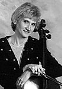

|  |
Kathleen Murphy Kemp is Assistant Principal Cello for the Rochester Philharmonic Orchestra and has been a member since 1977. She is a graduate of the Eastman School of Music and received the Bachelor of Music and Master Degree in performance. She also earned the Performers Certificate. Her teachers include Ron Leonard, Aan Harris, Jeff Holm, Gabor Rejto and Robert Newkirk. She participated in master classes with Gregor Piatagorsky and Janos Starker. Kathleen serves on the collegiate and community-ed faculties of Eastman as well as the Hochstein School of Music. In addition to numerous solo and chamber music recitals, Kathleen has performed with the Society for Chamber Music, Rochester Chamber Orchestra, the Fortissimo Music Festival, the Roycroft Chamber Music Festival, Aspen Music Festival, Music Academy of the West and Sarasota Festival.
As a strong advocate for music education, Kathleen served over ten years on the Rochester Philharmonic Orchestra Board, and during her tenure developed the Mentor Program (RPO musicians coaching RPYO students). She is also co-founder of Chamber Music at the Hochstein School - a program for beginning through advanced young musicians with an interest in learning the art of great chamber music playing. Kathleen devotes much of her time to educational volunteerism and has been honored with the RPO Volunteer Recognition Award and the Philharmonic Leagues Fanfare Award for Education.
Kathleen and husband Randy have two children - Megan, a violinist studying music education at Arizona State and Michael, a sophomore in high school whose interests include cello, percussion and ice hockey.
|